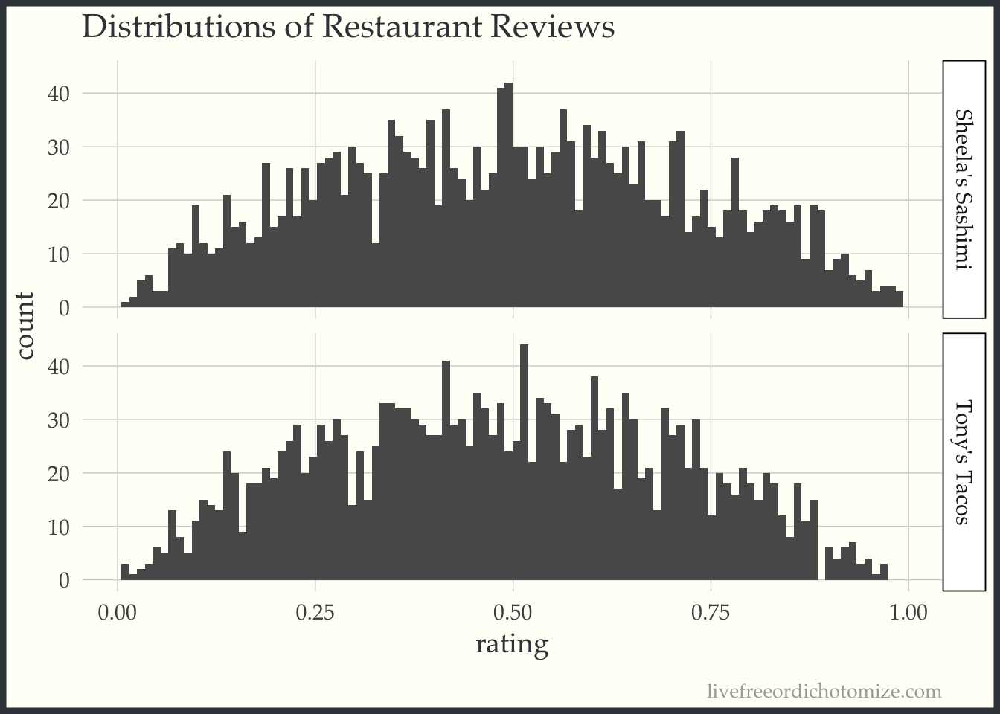
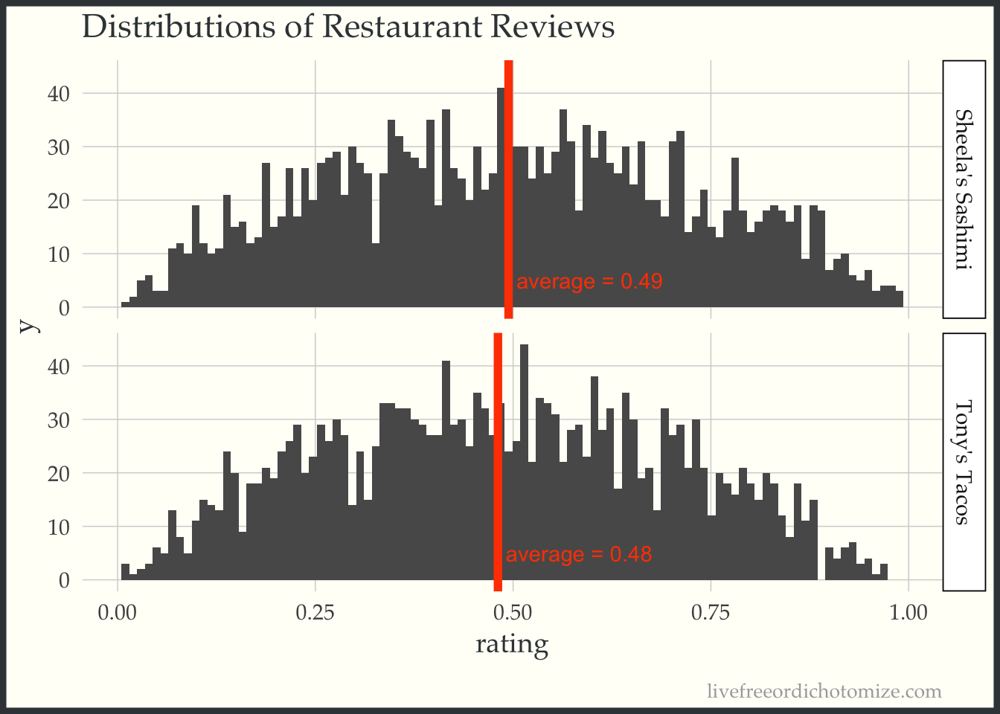

# Pull data from api
sheelas_reviews <- ratingsApiQuery(restaurant = "Sheela's Sashimi")
tonys_reviews <- ratingsApiQuery(restaurant = "Tony's Tacos")
head(sheelas_reviews)
## [1] 0.1731754 0.4026381 0.3552855 0.8238345 0.9141786
## [6] 0.1322581Setup
Recently, there seems to have been an uptick in citations of studies or statistics about this or that in the news and on the internet. As a statistician I think this is great. Anytime we can start to bring objectivity into our assessments of situations it’s fantastic. This is not to say all data/ stats are objective. Very frequently they can be very dangerously not so. However, I have also noticed some incorrect conclusions being drawn on the basis of these statistics. The following is a small example of a situation where a p-value might not technically be wrong, but simply does not do justice to the question at hand.
Scenario
Say you’re hungry for lunch one day and there are two restaurants just opened up nearby, Tony’s Tacos and Sheela’s Sashimi. You want to go to one of them but can’t decide which one. You happen to like both foods exactly the same and are bad at making decisions so you decide to go onto the (fictional) restaurant rating site FishersRestaurantReviews.com.
Taco Tuesday  or Sushi Cat?
or Sushi Cat? 
This rating site lets users rate restaurants they went to on a scale from 0 (this restaurant makes me question humanity’s choice to eat food) to 1 (this makes me question my choice to ever not eat food). You plug in both Tony’s Tacos and Sheela’s Sashimi into the search system and out pops the result: “go to Sheela’s Sashimi, it’s better than Tony’s Tacos p < 0.05”.
Based on this concrete evidence, you decide to go to Sheela’s Sashimi and come back mildly satisfied. Soon, your coworker who didn’t look at the rating website comes back from Tony’s Tacos and raves about the food. Disappointed and confused as to how this could be, you decide to go back to the food rating service and pull all reviews for Tony’s and Sheela’s from their handy dandy reviews api…
Great, now that you have the data let’s run a t-test to check if Sheela’s really is better.
# Do a T-test on the data to see if the ratings website is correct
(t_results <- t.test(sheelas_reviews,tonys_reviews,alternative="greater"))
##
## Welch Two Sample t-test
##
## data: sheelas_reviews and tonys_reviews
## t = 1.9131, df = 3991, p-value = 0.0279
## alternative hypothesis: true difference in means is greater than 0
## 95 percent confidence interval:
## 0.001878156 Inf
## sample estimates:
## mean of x mean of y
## 0.4942271 0.4808139Well look at that, the ratings website at least seems to be getting their two-sample t-tests correct. But still, how could it be that you had a worse experience at Sheela’s than your coworker did at Tony’s? Maybe the API is broken, let’s just visualize the data to see if something seems astray…
# Combine data into a dataframe for investigation
review_data <- rbind(
data_frame(rating = sheelas_reviews, restaurant = "Sheela's Sashimi"),
data_frame(rating = tonys_reviews, restaurant = "Tony's Tacos")
)
## Warning: `data_frame()` was deprecated in tibble 1.1.0.
## ℹ Please use `tibble()` instead.
# plot the ratings.
rating_dists <- ggplot(review_data, aes(rating)) +
geom_histogram(bins = 100) +
facet_grid(restaurant ~ .) +
labs(title = "Distributions of Restaurant Reviews")
rating_dists
Wait, what? Those look like they’re identical, how in the world could our p-value be so significant. Sheela’s should be clearly better than Tony’s? Right?
To check your logic you flip open your dusty intro-stats book and look at the *deep breath* Student’s two-sample-equal-sample-size-equal-variance-t-test formula.
\[T = \frac{\bar{X}_1 - \bar{X}_2}{s_p \sqrt{2/n}}\] We can ignore the \(s_p\), it’s just that annoyingly complicated pooled standard deviation that literally noone has ever memorized.
Suddenly you remember, ‘that’s right, we’re testing if the average review differs!’ Even so, how does this make sense? Those distributions up there look practically identical. Let’s put a mean line on them to see if we need glasses or something.
# Find each restaurants average rating
review_means <- review_data %>%
group_by(restaurant) %>%
summarise(average = mean(rating))
# Plot distributions again with the average imposed over this time.
# plot the ratings.
rating_dists +
geom_vline(data = review_means, aes(xintercept = average), color = "orangered", size = 2) +
geom_text(data = review_means,
aes(x = average + 0.01, y = 5, label = sprintf("average = %3.2f",average) ),
hjust = 0, color = "orangered")
## Warning: Using `size` aesthetic for lines was deprecated in ggplot2
## 3.4.0.
## ℹ Please use `linewidth` instead.
So they are different but by 0.01… this is hardly what one would call “significant”. What’s going on?
Why the p-value is misleading
Here in lies the problem with p-values. In this case our p-value for “Sheela’s is better than Tony’s” is formally saying, if we were to re-poll an identical group of reviewers an infinite amount of times to rate these two restaurants, and they truly were the same quality, then the chances of us getting reviews who’s means favor Sheela’s restaurant as much or more as they do in our data, is 0.028. Aka it’s unlikely. It took me a solid minute of thinking through this in my head to make sure I wrote it down properly. How any statistician complains about people misinterpreting p-values is a mystery to me.
The thing is, when you choose to eat at a restaurant you don’t care about the asymptotic behaviors of the average review, you care about if you are going to enjoy your particular meal. In other words, you care about an individual realization of the distribution you are modeling. In the above scenario I don’t think anyone would look at these data and say going to Sheela’s will for sure result in a better experience. P-values make statements about populations, very frequently we’re not interested in the population.
P-values and indeed much of common statistical methodology relies on summary statistics. This fact is very easy to forget, I do all the time and I’m literally paid to understand statistics.
 Perhaps we should stop looking at the forest and look at the trees. Image source
Perhaps we should stop looking at the forest and look at the trees. Image source
What can we do about this?
While this example may seem contrived (and it really is) I think that taking a step back every time we see a p-value or cite some scientific result that compares two groups and think about what exactly is being compared. Are we making judgement about individuals based upon summary statistics of populations? Could tiny perturbations caused by un(observed/ accounted for) factors be enough to tip that average into “statistical significance”. For instance perhaps those who like sushi are a tiny bit more likely to leave a positive review, thus biasing the sample a tiny bit to Sheela’s, which in turn results in a significant p-value even though there’s no functional difference between the two.
I absolutely don’t have a fix to this problem but I will throw in my biased piece of advice for not falling for the summary statistics = individual trap: plot.
The above is an example of this. If we just relied on the p-values to decide for us we would have never realized that the two restaurants were essentially identical in terms of their ratings. Even worse we may have taken the bias we gained from our knowledge of the p-value and had it effect our experience and subsequent ratings. Perhaps the tiny difference in mean is entirely due to situations like that, in which case, even the p-value when interpreted in it’s strict and horribly esoteric way is wrong.
Adendum
Turns out our review data for the two restaurants happen to exactly follow a beta distribution! How weird.
n <- 2001
alpha <- 8
beta_s <- 2
beta_t <- 2.15
ratingsApiQuery <- function(restaurant){
if (restaurant == "Sheela's Sashimi"){
return(rbeta(n, beta_s, beta_s))
} else {
return(rbeta(n, beta_s, beta_t))
}
}